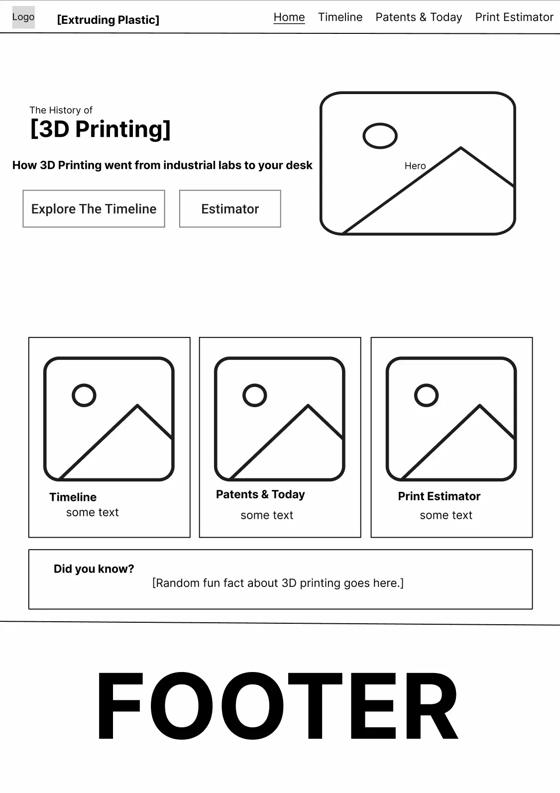
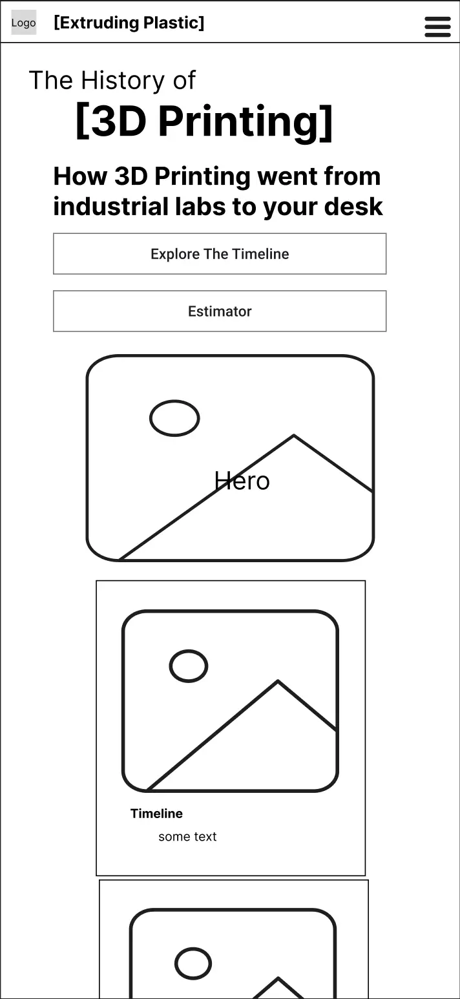

Site Name
Extruding Plastic: The History and Commercialization of 3D Printing - I think this is a clever name for the site, considering it will be a brief overview of the history of 3d printing and it's Commercialization.
Possible domain: extrudinghistory.org
Site Purpose
The site is an entryway for those looking to learn more about 3D printing. How it came to be where it is now, and how it all got started. There is also a newsletter signup form to keep up to date on the latest technological developments in 3D printing.
Scenarios
- I want to learn more about the history of 3d printing.
- How did 3d printers become so ubiquitous?
- Where is 3d printing technology at now?
- What are the practical uses of owning a 3d printer?
Color Schema
#1F2937 Header, footer, headings
#FAF8F5 Page Background
#B8470A Accents, buttons, links
#374151 Paragraph text
Typography
I plan to use the google font "Space Grotesk" I went through a bunch of fonts and think this one looks cool, techy, and kind of matches the vibe i'm going for. I'm going to keep things simple and just use the one font for everything.
Wireframes
There will be four pages
-
Home page
Hero with the site title and a one-sentence pitch
Three cards linking to the other pages
Small JS touch: a random "3D printing fact" pulled from an array of objects, which when clicked shows another fact. bit of an almost easter egg.
-
Timeline
8-12 key technology milestones
timeline will be built with JS from an array of objects year, title, description, image, category. using template literals.
filter buttons by technology or era? filter(), event listeners, or conditionals, not sure yet.
lazy-load all the images, give them a fade-in or something.
-
Patents and Today
Why the 2009 FDM patent expiration opened the door to cheap hobby printers
Todays commercial landscape, consumer vs industrial, major uses like rapid prototyping, medical, and aerospace.
Mostly Content here to balance a lot of the JS on other pages.
-
Print Estimator
I'm going to port in a version of my CSE111 project that estimated print costs
Form inputs: model weight in grams, spool price and weight in grams, print hours, electricity cost / kwh
shows a cost breakdown and saves past estimates to localStorage with a "clear History"
this covers my form, localStorage, objects, and array methods and conditionals requirements in a single page.
-
Wireframes for Home page


I know I know only two wireframes... It's my first time using figma and i SUCK at it. Those took me FOREVER!